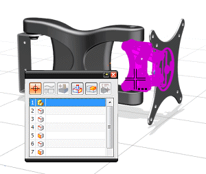
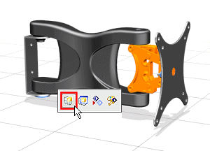
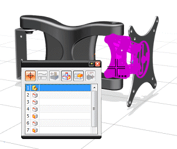
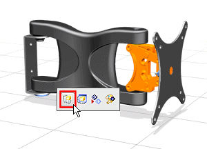

将子装配设为工作部件
-
在装配导航器中，双击 des03_wall_mount_linkage_assm 节点以将它设为工作部件。

由于 des03_wall_mount_linkage_assm 是一个子装配，所以在装配导航器中进行选择会更容易一些。
您也可以在图形窗口中使用快速拾取来选择子装配，然后从快捷菜单中选择设为工作部件。


在装配导航器中，双击 des03_wall_mount_linkage_assm 节点以将它设为工作部件。
由于 des03_wall_mount_linkage_assm 是一个子装配，所以在装配导航器中进行选择会更容易一些。
您也可以在图形窗口中使用快速拾取来选择子装配，然后从快捷菜单中选择设为工作部件。

